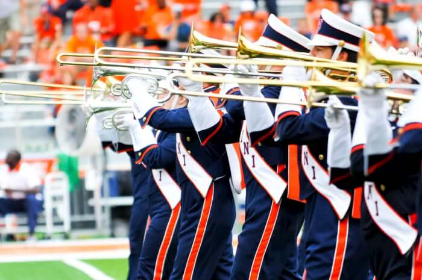

Learn how to join the band, what life is like in the Marching Illini, and about other opportunities through Fighting Illini Athletic Bands.
SEE SPECIAL EVENTSGet the details on this season's variety of surprises, like special guests, parades, ceremonies, or exhibition performances.
LEARN ABOUT USRead about the rich and historic past of the world's first college marching band, along with the traditions and innovations formed along the way.
FOLLOW USGet the latest scoop on our performances, rehearsals, and endeavors on and off the field, like the annual Marching Illini Sousaphone 5K.
EXPERIENCE USSee dramatic visuals materialize, feel powerful music in the stands, or march with us to Memorial Stadium -- there's nothing like the Marching Illini live.
 SUPPORT USFrom purchasing merchandise to sharing hashtags, learn more about all the ways you can make a difference in moving the Marching Illini forward.
PRESEASON CAMPGet hyped for this season's historic week of record talent for music and marching, all while joining together as an Illini family like none other.
JULY 30TH SECTIONALYou won't want to miss this opportunity to get an early taste of what the 2016 season has to offer. Practice with a large ensemble and meet up with fellow section members.